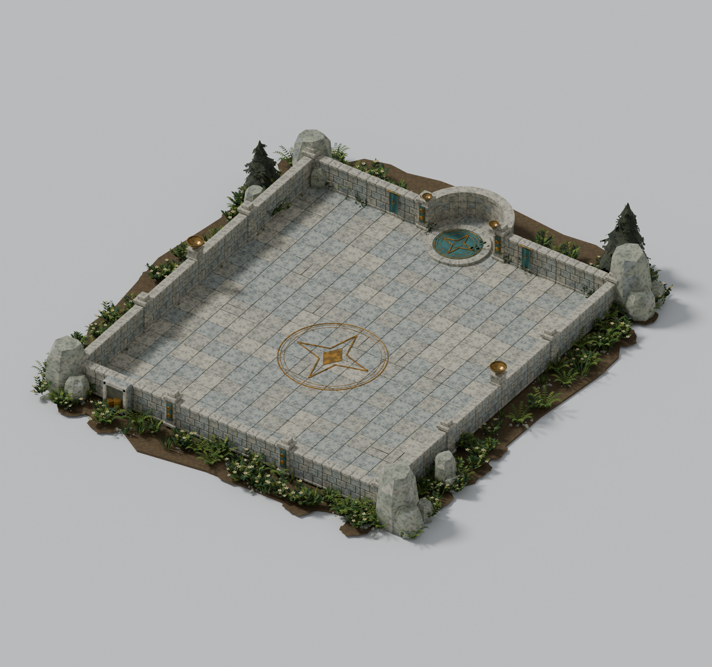
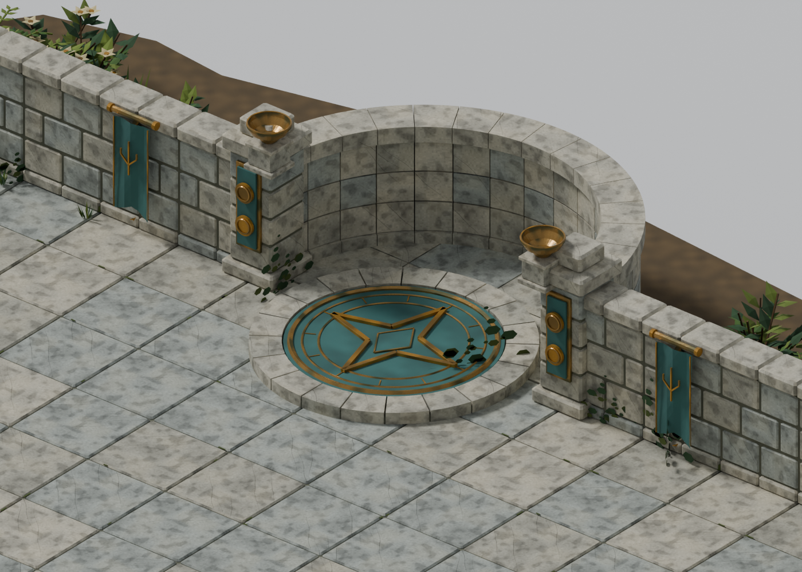
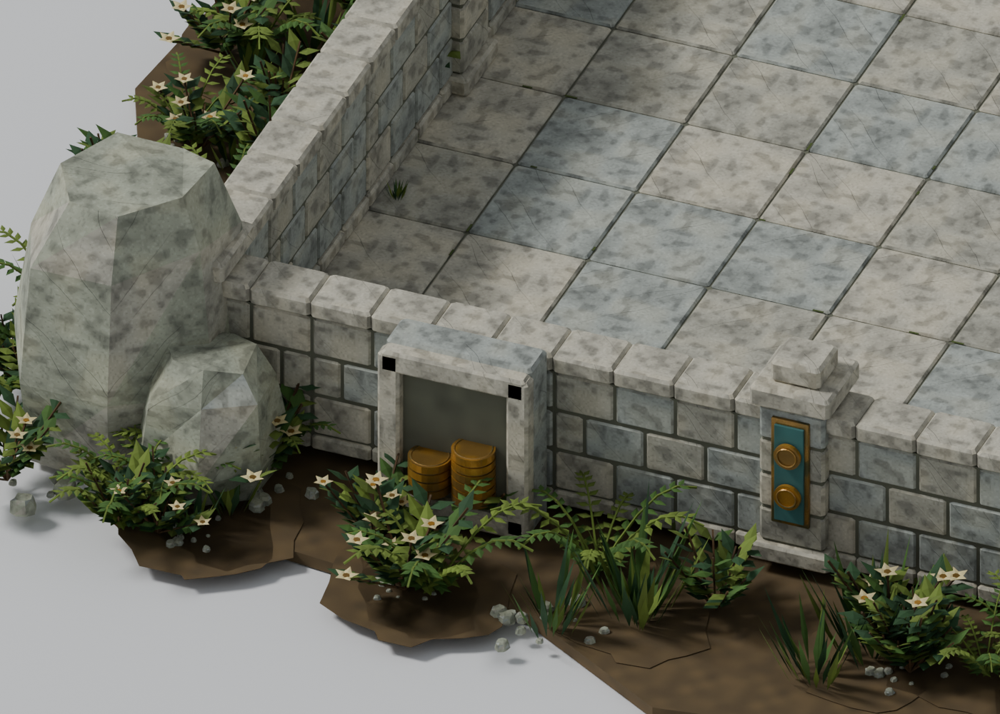
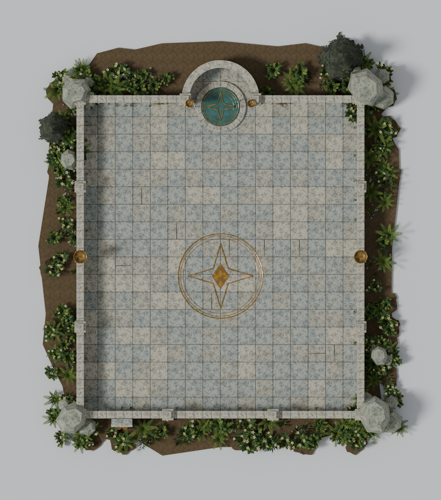
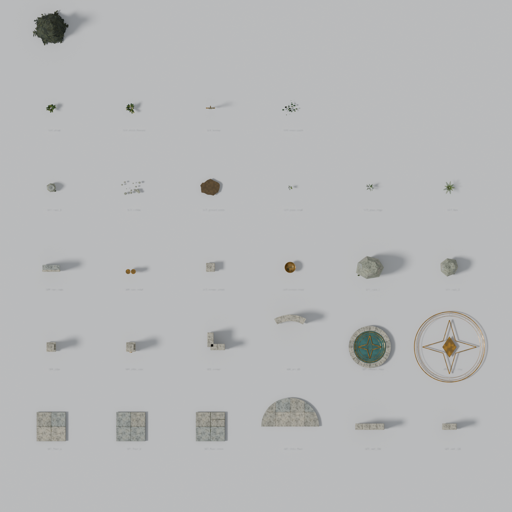
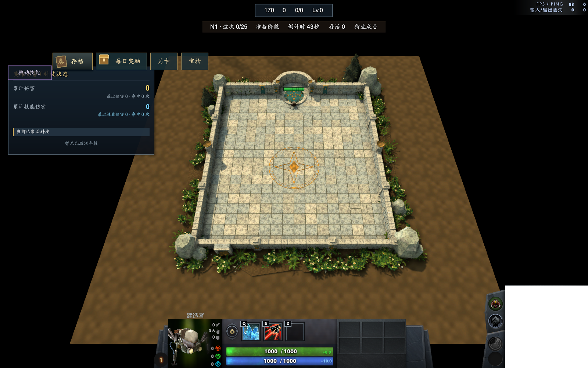

以上为实际 Blender 场景渲染。石材、青铜、布料包含颜色、法线与反射贴图；传送台和地纹使用实体嵌件，未制作发光、火焰或粒子。玩法入口与刷怪位置以命名标记预留，正式地图中的放置与玩法联调可在后续进行。
近景与布局




可复用组件
游戏内检查

房间已编译并在 Workshop 加载，中央与入口采样点可行走，建造者完成室内步行；截图保留游戏 HUD。完整挑战玩法尚未联调。
使用说明
Blender 文件包含组装房间与 B01—B16 组件库两个场景，贴图已打包。标准地板为 256×256；直墙长 256 / 128，高 176；三片 60° 弧墙可拼成后侧半圆。B15 松树使用 Dota 原生 models/props_foliage/tree_pine01.vmdl，Blender 内保留其预览副本。
Hammer 资源目录为 models/gold_training_room/。房间净尺寸 2048×2304，Blender 地板 Z=0，地图实例整体抬高 128；各组件保留独立对象。正式主地图未替换。